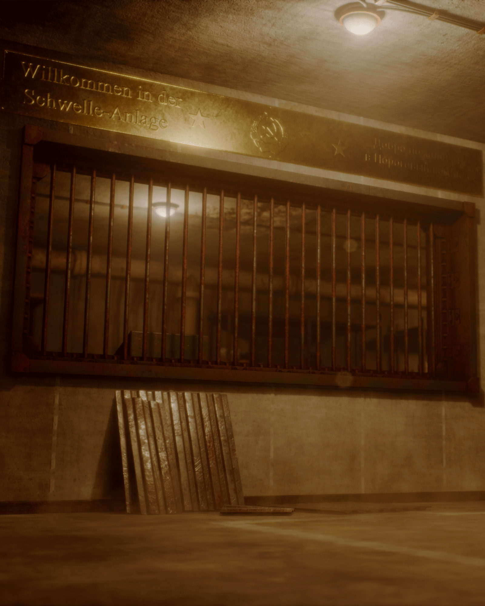

<section class="about-page">


<div class="about-container">


    <!-- =====================================
         LEFT COLUMN
         
         Contains:
         - About Me text
         - Software logos underneath
    ====================================== -->


    <div class="about-content">


        <h1>
            About Me
        </h1>


        <p>
            “Toliho” is my creative alias, derived from my full name,
            Tom Oliver Hockenhull. I am an Environment and 3D Artist
            based in the UK.
        </p>


        <p>
            Since 2018, I’ve been studying and working within the games
            industry. I studied a BA (Hons) and MA in Games Art at
            Sheffield Hallam University, graduating with First Class
            Honours in both qualifications (2022).
        </p>


        <p>
            Professionally, I have contributed to a published title on
            the PS5 <em>Racecar Crashers</em> and I am currently creating
            art assets for a soon to be published title on Steam. Alongside industry work, I have worked in teaching for two years, helping to pioneer a first-of-it’s-kind Indie Games Development BSc, supporting the growth of the next generation of games industry talent, while continuing to refine my own craft.
        </p>


        <p>
            I am currently seeking a permanent role within an established
            game studio, where I can contribute to ambitious projects,
            collaborate with talented developers and continue to grow as a professional.
        </p>


        <p>
            My workflow has traditionally centres around creating polished,
            game-ready assets and environments using industry-standard tools.
            I am continuously expanding my technical skillset, currently this
            is focusing on improving my knowledge of C# and programming in general,
            bridging the gap between art and technology.
        </p>


        <!-- Software logos sit underneath the biography -->

        <div class="software-section">

            

        </div>


    </div>


    <!-- =====================================
         RIGHT COLUMN

         Artwork stretches alongside:
         biography + software logos
    ====================================== -->


    <div class="about-feature-image">

        

    </div>


</div>


</section>
